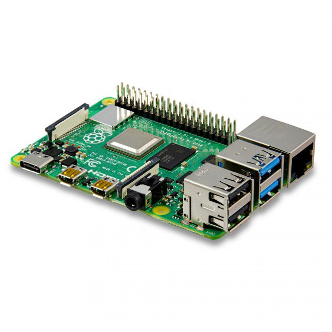
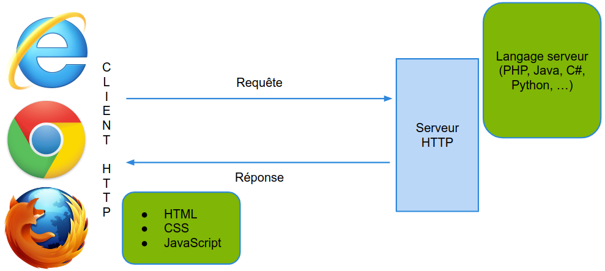

Serveur informatique
- Met à disposition des services à des clients
- Fonctionne 24H/24 7j/7
- 376 millions de serveurs web


HTTP est le protocole utilisé par les navigateurs web.
Le port 80 (:80) est utilisé par défaut par les serveurs HTTP.
